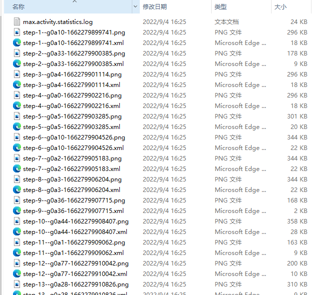

我在 自动遍历测试之Monkey工具 和 AppCrawler自动遍历测试 分别介绍了APP稳定性测试工具monkey和AppCrawler，它们各有优缺点，本文介绍另一款也比较好用的稳定性测试工具Fastbot。
简介
Fastbot是由字节跳动 Quality Lab开源的一款基于model-based testing 结合机器学习、强化学习的APP 稳定性测试工具，提供了Android和iOS版本。具体原理介绍可参考这篇文章：https://mp.weixin.qq.com/s/QhzqBFZygkIS6C69__smyQ。
本文记录一下Fastbot的使用方法。
前期准备
环境
本文使用环境：
- Windows10
- Android 10真机
- adb 1.0.40
adb安装可参考Android ADB原理及常用命令。
使用数据线将手机连接到电脑，到手机设置中的开发人员选择中开启USB调试，电脑命令行输入adb devices 查看手机是否连接成功：
1 | $ adb devices |
克隆Fastbot_Android项目到本地：
1 | git clone https://github.com/bytedance/Fastbot_Android.git |
然后进入项目目录，将 framework.jar fastbot-thirdpart.jar monkeyq.jar push 到手机/sdcard目录，push libs/* 到 /data/local/tmp/目录:
1 | $ adb push fastbot-thirdpart.jar /sdcard |
Fastbot遍历测试示例
下面介绍如何使用Fastbot进行简单的遍历测试。
添加限定词
添加限定词，可提升模型， 使用AAPT2（Android 资源打包工具）解析apk中的索引字符串资源，aapt2是Google Android开发工具包Android SDK中提供的工具，所以要先安装一下Android SDK，下载地址为：http://tools.android-studio.org/index.php/sdk。
安装完成后将aapt2添加到 PATH 环境变量中，我的电脑路径为 D:\android-sdk-windows\build-tools\29.0.3\ 。
下面提取要测试APP的apk文件中字符串，以东方财富APP为例，字符提取命令如下：
1 | aapt2 dump strings dfcf_0005564.apk > max.valid.strings |
将max.valid.stringspush到手机sdcard目录下：1
adb push max.valid.strings /sdcard
获取包名
接下来读取要测试的APP包名，可以使用aapt2工具：
1 | $ aapt2 dump badging dfcf_0005564.apk |
或者手机打开东方财富，然后执行如下命令：
1 | $ adb shell dumpsys activity activities | findstr mResumedActivity |
可获取到包名为com.eastmoney.android.berlin 。
开启遍历测试
Fastbot遍历测试命令如下：
1 | adb -s 设备号 shell CLASSPATH=/sdcard/monkeyq.jar:/sdcard/framework.jar:/sdcard/fastbot-thirdpart.jar exec app_process /system/bin com.android.commands.monkey.Monkey -p 包名 --agent reuseq --running-minutes 遍历时长 --throttle 事件频率 -v -v |
-s 设备号：多个设备需要指定设备号，单独设备无需此-s参数-p 包名：遍历app的包名，-p+包名--agent reuseq：遍历模式，无需更改--running-minutes 遍历时长(分钟)：# 遍历时间：—running-minutes 时间--throttle 事件频率：遍历事件频率，建议为500-800- 可选参数
--bugreport：崩溃时保存bug report log--output-directory /sdcard/xxx：log/crash 另存目录
示例：
1 | $ adb -s CUYDU19626004019 shell CLASSPATH=/sdcard/monkeyq.jar:/sdcard/framework.jar:/sdcard/fastbot-thirdpart.jar exec app_process /system/bin com.android.commands.monkey.Monkey -p com.eastmoney.android.berlin --agent reuseq --running-minutes 1 --throttle 500 -v -v --output-directory /sdcard/fastbot_results&adb pull /sdcard/fastbot_results D:\ProgramWorkspace\DevTest-Notes\APP\Android\Fastbot_Android\results |
打印日志会记录每次操作细节，totalActivity（APP所有activity），ExploredActivity（遍历到的activity列表）以及本次遍历的总覆盖率。
其中Java Crash、ANR、Nativie Crash会以追加方式写入到/sdcard/crash-dump.log文件中，捕获的Anr 同时也会写入 /sdcard/oom-traces.log 文件。
专家系统
不同业务线支持不同的个性化需求，业务深度定制化
自定义输入法
ADBKeyBoard在输入栏自动输入内容，屏蔽UI输入法
适用需求： 遇到搜索栏乱输入，想要输入指定字符
1. 下载安装ADBKeyBoard
下载ADBKeyBoard.apk，adb安装：
1 | $ adb install ADBKeyBoard.apk |
安装完成后设置ADBKeyBoard为默认输入法，设置生效后，点击输入栏时ADBKeyBoard不会弹起ui输入栏。
2. 配置随机输入字符串
配置输入框可输入的字符串，遍历测试时会随机选择字符输入。
设置配置文件max.config：
1 | max.randomPickFromStringList = false # 关闭随机输入字符串 |
如果设置 max.randomPickFromStringList = true ,需要编辑 max.strings 文件，输入想要输入的字符串：
1 | 1 搜索 |
将文件max.config push到手机：
1 | adb push max.strings /sdcard |
3. 配置fuzzing输入
编辑项目中 test 目录下的 max.fuzzing.strings文件，输入想要输入的字符串
将文件push到手机:
1 | adb push test/max.fuzzing.strings /sdcard |
fuzz概率如下：
1 | 1. 50% 概率输入fuzzing.strings中某个string |
自定义事件序列
可以人工配置操作路径，用来覆盖 Fastbot 自动遍历不到的场景。也可以自定义操作序列，设置操作的先后顺序。
1、新建 max.xpath.actions 文件（文件名称不可更改）
2、编写事件序列配置（case）：
prob：发生概率，”prob”：1,代表发生概率为100%activity：所属场景，详见：三.获取当前页面所属的Activitytimes：重复次数，默认为1即可actions：具体步骤的执行类型throttle：action间隔事件（ms）
action 支持以下类型：必须大写
CLICK：点击，想要输入内容在action下补充text，如果有text 则执行文本输入LONG_CLICK：长按BACK：返回SCROLL_TOP_DOWN：从上向下滚动SCROLL_BOTTOM_UP：从下向上滑动SCROLL_LEFT_RIGHT：从左向右滑动SCROLL_RIGHT_LEFT：从右向左滑动
下面以东方财富为例：
1 | [ |
编写好文件后，push到手机:
1 | $ adb push max.xpath.actions /sdcard |
Activity屏蔽
手动配置黑、白名单配置，可用来单独覆盖几个场景或屏蔽一些不必要场景。
1、Activity白名单配置
只覆盖白名单内的activity
1、在PC端新建 awl.strings文件，写入Activity的名称，例如
1 | com.eastmoney.android.module.launcher.internal.home.HomeActivity |
2、将 awl.strings 文件push到手机端的sdcard目录下, 目录必须为sdcard
1 | adb push awl.strings /sdcard |
3、运行命令时添加以下参数：--act-whitelist-file /sdcard/awl.strings
1 | adb -s CUYDU19626004019 shell CLASSPATH=/sdcard/monkeyq.jar:/sdcard/framework.jar:/sdcard/fastbot-thirdpart.jar exec app_process /system/bin com.android.commands.monkey.Monkey -p com.eastmoney.android.berlin --agent reuseq --act-whitelist-file /sdcard/awl.strings --running-minutes 1 --throttle 500 -v -v |
只会遍历白名单内的设置的activity。
2、Activity黑名单配置
黑名单内的activity不覆盖
1、新建 abl.strings 文件，在文件中输入Activity的名称，同白名单方法一致
1 | com.eastmoney.android.module.launcher.internal.home.HomeActivity |
由于白名单和黑名单不能同时设置，设置了白名单则白名单外的都为黑名单。先把白名单awl.strings文件删掉。
2、然后将abl.strings文件push到手机端的sdcard目录下：
1 | adb push abl.strings /sdcard |
3、运行命令时添加以下参数：
1 | --act-blacklist-file /sdcard/abl.strings |
1 | adb -s CUYDU19626004019 shell CLASSPATH=/sdcard/monkeyq.jar:/sdcard/framework.jar:/sdcard/fastbot-thirdpart.jar exec app_process /system/bin com.android.commands.monkey.Monkey -p com.eastmoney.android.berlin --agent reuseq --act-blacklist-file /sdcard/abl.strings --running-minutes 1 --throttle 500 -v -v |
屏蔽控件或区域
配置需要屏蔽的控件或区域，比如屏蔽退出登录按钮。
1、新建 max.widget.black 文件，可配置activity、xpath和bounds，比如：
1 | [ |
屏蔽控件或区域共有三种方式：
bounds：屏蔽某个区域，在该区域内的控件或坐标不会被点击，bounds 为 0.0～1.0 之间的一个百分比值。xpath：查找匹配的控件，屏蔽点击该控件。- xpath+bounds：查找匹配的控件，当控件存在时屏蔽指定的区域。
2、将max.widget.black文件push到手机sdcard目录下
1 | adb push max.widget.black /sdcard |
执行：
1 | adb -s CUYDU19626004019 shell CLASSPATH=/sdcard/monkeyq.jar:/sdcard/framework.jar:/sdcard/fastbot-thirdpart.jar exec app_process /system/bin com.android.commands.monkey.Monkey -p com.eastmoney.android.berlin --agent reuseq --running-minutes 1 --throttle 500 -v -v |
高速截图
保存测试过程中的截图。
1、新建 max.config文件，增加以下属性
max.takeScreenshot = truemax.takeScreenshotForEveryStep = truemax.saveGUITreeToXmlEveryStep =true
2、将max.config 文件push到手机sdcard目录中:
1 | adb push max.config /sdcard |
添加--output-directory参数指定输出路径， --throttle 参数要 >200 才会截图：
1 | adb -s 设备号 shell CLASSPATH=/sdcard/monkeyq.jar:/sdcard/framework.jar:/sdcard/fastbot-thirdpart.jar exec app_process /system/bin com.android.commands.monkey.Monkey -p 包名 --agent reuseq --running-minutes 遍历时长 --throttle 事件频率 -v -v --output-directory 指定路径 |
示例代码：1
adb -s CUYDU19626004019 shell CLASSPATH=/sdcard/monkeyq.jar:/sdcard/framework.jar:/sdcard/fastbot-thirdpart.jar exec app_process /system/bin com.android.commands.monkey.Monkey -p com.eastmoney.android.berlin --agent reuseq --running-minutes 1 --throttle 500 -v -v --output-directory /sdcard/fastbot_results&adb pull /sdcard/fastbot_results D:\ProgramWorkspace\DevTest-Notes\APP\Android\Fastbot_Android\results

权限自动授予
app 的权限弹窗处理， 默认启动app前会自动授予app所需的所有权限，但如果想测试app运行过程中的动态权限弹窗 在 max.config 配置
max.grantAllPermission = trueFastbot启动后会自动授予各种权限；shell中增加
1
2
3
4-p com.android.packageinstaller
-p com.android.permissioncontroller
-p com.lbe.security.miui # for (miui android 10)
-p com.samsung.android.permissioncontroller # for (samsung android 10)
增加弹窗相关package，可在权限弹窗时关闭弹窗。
Fastbot android APP自动遍历测试就介绍到这里，更多功能可参考官方文档：https://github.com/bytedance/Fastbot_Android/blob/main/handbook-cn.md。
参考资料：
Fastbot icse 2020 paper
https://2020.icse-conferences.org/details/ast-2020-papers/25/Fastbot-A-Multi-Agent-Model-Based-Test-Generation-SystemFastbot mtsc2020 ppt
https://pan.baidu.com/s/1flUHAEQKSFZvJDWIWyChJAFastbot github
https://github.com/bytedance/Fastbot_Android
https://github.com/bytedance/Fastbot_iOShttps://github.com/bytedance/Fastbot_Android/blob/main/handbook-cn.md
https://github.com/bytedance/Fastbot_iOS/blob/main/Doc/handbook-cn.md
MTSC2021深圳站《字节跳动客户端稳定性测试——Fastbot跨平台实践》
我的回答之所以发挥作用，原因不是别的，是因为他们自己很努力，如自己不想积极认真的生活，不管得到什么样的回答都没用。——东野圭吾《解忧杂货店》
本文标题:Android APP稳定性测试工具Fastbot
文章作者:hiyo
文章链接:https://hiyongz.github.io/posts/app-testing-tools-for-fastbot-android/
许可协议:本博客文章除特别声明外，均采用CC BY-NC-ND 4.0 许可协议。转载请保留原文链接及作者。